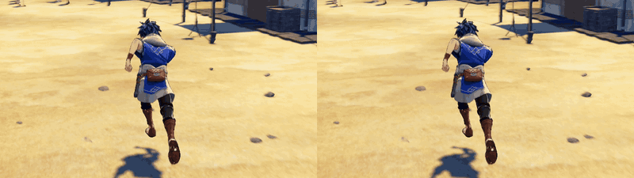
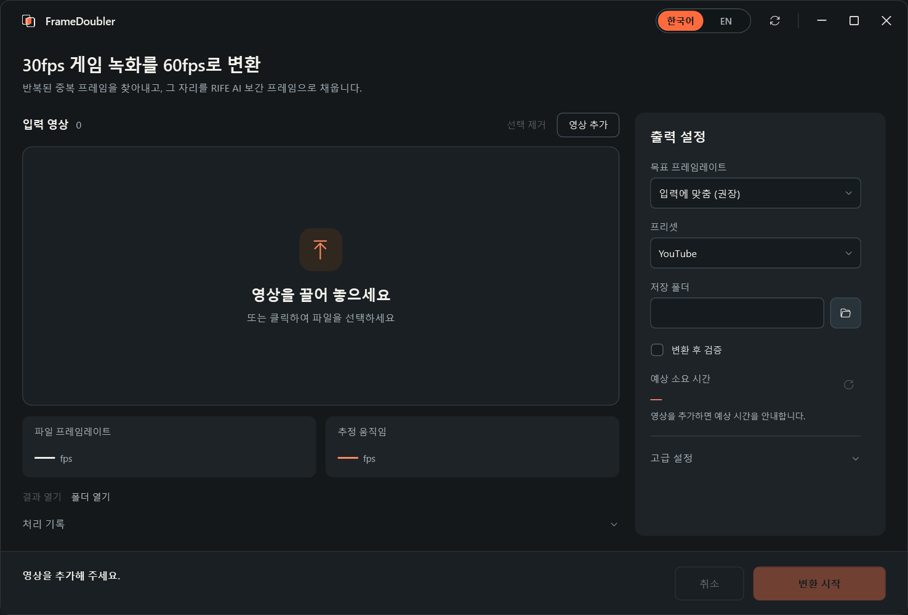
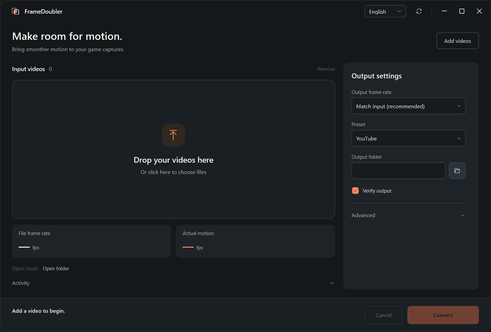

FrameDoubler
FrameDoubler자동 분석
파일의 fps와 추정한 움직임 fps를 나란히 보여 줍니다. 필요한 처리는 스스로 정합니다.
게임 녹화 영상을 위한 RIFE 프레임 보간 도구
60fps로 녹화했는데 화면은 30fps로 끊겨 보이시나요? FrameDoubler는 녹화 파일 속의 중복 프레임을 찾아냅니다. 그 자리를 AI가 만든 사이의 프레임으로 채웁니다. 그래서 실제 60fps 영상이 됩니다.
Fire Emblem Fortunes Weave 4K 녹화의 같은 구간입니다. 차이가 잘 보이지 않으면 느리게 재생해 보세요. 실제 속도의 차이는 60Hz 이상의 화면에서 보입니다.
문제
콘솔 게임이 30fps로 동작하면, 캡처 카드는 같은 화면을 두 번씩 받아 60fps 파일로 저장합니다. 파일 정보에는 60fps라고 표시되지만 실제 움직임은 30fps입니다. 유튜브에 올려도 60fps의 부드러움은 나오지 않습니다.
일반적인 보간 프로그램은 이 파일을 그대로 2배로 늘립니다. 그러면 똑같은 두 프레임 사이를 보간하게 되어 결과는 달라지지 않습니다. FrameDoubler는 먼저 중복을 걷어 내고 진짜 움직임만 남긴 뒤에 보간합니다.

작동 방식
영상의 해상도, 코덱, 프레임레이트, 비트 심도, 색상 정보를 읽습니다. 이 PC에서 실제로 동작하는 GPU와 인코더를 시험하여 고릅니다.
프레임을 서로 비교하여 파일의 fps와 실제 움직임의 fps를 구별합니다. 60fps 파일 속의 30fps 움직임을 찾아냅니다.
압축 때문에 조금씩 달라진 중복 프레임도 판정합니다. 프레임 드롭으로 3번, 4번 반복된 구간과 정지 화면도 구분합니다.
남은 프레임 사이의 정확한 시각에 새 프레임을 만듭니다. ncnn과 Vulkan으로 제조사와 관계없이 GPU에서 실행합니다. 장면이 바뀌는 순간에는 두 화면을 섞지 않습니다.
NVENC, AMF, QSV, 소프트웨어 인코더 가운데 동작하는 것을 고릅니다. H.264, HEVC, AV1로 만들고 길이와 오디오 싱크를 유지합니다.
결과 파일의 프레임레이트, 길이, 오디오 동기, 색상을 다시 검사합니다. 남은 중복 프레임의 비율도 함께 보고합니다.
측정 결과
추정한 실제 움직임입니다. 파일은 60fps지만 움직임은 30fps였습니다.
새로 만든 사이의 프레임입니다. 전체 1,283프레임 가운데 중복 자리를 채웠습니다.
변환 뒤에 남은 움직임 중복의 비율입니다. 검증 기준(1%)을 통과했습니다.
원본과의 영상 길이 차이입니다. 오디오 동기의 변화도 최대 6.83ms였습니다.
Fire Emblem Fortunes Weave를 3840×2160, 60fps로 약 21초 녹화한 샘플의 결과입니다. 개발 기준 PC(RTX 4080 SUPER, i7-14700KF)에서 변환하고 검증했습니다. 영상의 내용과 장치에 따라 결과와 처리 속도는 달라집니다.
기능
파일의 fps와 추정한 움직임 fps를 나란히 보여 줍니다. 필요한 처리는 스스로 정합니다.
프레임 드롭으로 생긴 반복과 일시 정지 메뉴 같은 정지 화면을 구별합니다.
컷이 바뀌는 순간에는 보간하지 않습니다. 두 장면이 겹쳐 보이는 프레임이 생기지 않습니다.
NVIDIA, AMD, Intel의 Vulkan GPU에서 동작합니다. GPU를 쓸 수 없으면 CPU로 처리하고 느려진다고 알려 줍니다.
NVENC, AMF, QSV와 소프트웨어 인코더로 짧게 인코딩해 봅니다. 성공한 코덱만 메뉴에 보여 줍니다.
해상도와 fps에 맞는 권장 비트레이트의 MP4를 한 번에 만듭니다.
영상 길이를 프레임 단위로 맞춥니다. 오디오의 시작 시각과 색상 정보도 원본 그대로 유지합니다.
미니맵이나 자막처럼 움직이지 않는 영역을 지정할 수 있습니다. 그 영역의 화소는 원본 그대로 유지합니다.
보관용으로 더 높은 프레임레이트가 필요할 때 선택합니다.
여러 영상을 순서대로 변환합니다. 함께 들어 있는 명령줄 도구로 폴더 전체를 처리할 수도 있습니다.
새 버전이 나오면 알려 줍니다. SHA-256과 모든 파일의 해시가 일치할 때만 설치합니다. 실패하면 이전 버전으로 되돌립니다.
창을 최소화하면 트레이에서 계속 변환합니다. 화면은 한국어와 영어를 지원합니다.
실제 화면
분석이 끝나면 이 영상이 어떤 파일인지, 무엇을 할 것인지 바로 알 수 있습니다. 기본 화면에는 프레임레이트, 프리셋, 저장 폴더, 검증만 보여 줍니다. 장치와 인코더 같은 세부 옵션은 고급 설정에 접어 두었습니다.




내려받기
FrameDoubler 폴더는 통째로 유지합니다(약 460MB).FrameDoubler.exe를 실행하고 영상을 끌어다 놓습니다..NET 런타임, RIFE 모델 두 가지, FFmpeg가 모두 들어 있습니다. Python, CUDA Toolkit, 별도 SDK를 설치하거나 모델을 따로 내려받을 필요가 없습니다.
Get-FileHash FrameDoubler.zip -Algorithm SHA256
SHA-256 값은 릴리스 설명에 적혀 있습니다.